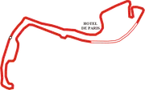
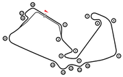
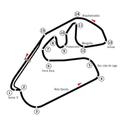

Templo de la velocidad
El circuito con las rectas más largas del calendario, en el corazón del bosque de Monza.

3.337 km · 78 vueltas

5.793 km · 53 vueltas
Spa-Francorchamps7.004 km · 44 vueltas

5.891 km · 52 vueltas
Suzuka5.807 km · 53 vueltas

4.309 km · 71 vueltas
Toca un circuito para ver su ficha completa.
El circuito con las rectas más largas del calendario, en el corazón del bosque de Monza.
Los monoplazas superan los 360 km/h antes de frenar en la primera chicane.
La afición de Ferrari invade las gradas cada año de rojo de pies a cabeza.
Las calles del Principado albergan el trazado más lento y estrecho del calendario, donde la precisión pesa más que la velocidad punta.
| Longitud | 3.337 km |
| Vueltas | 78 |
| Curvas | 19 |
| Primera carrera | 1950 |
| Vuelta rápida | 1:12.909 — Hamilton (2021) |
Conocido como el «Templo de la velocidad», sus largas rectas en el corazón del Parco di Monza lo convierten en el circuito más rápido del calendario.
| Longitud | 5.793 km |
| Vueltas | 53 |
| Curvas | 11 |
| Primera carrera | 1950 |
| Vuelta rápida | 1:21.046 — Barrichello (2004) |
El circuito más largo del calendario, escondido entre las colinas de las Ardenas belgas y famoso por el temido tramo de Eau Rouge-Raidillon.
| Longitud | 7.004 km |
| Vueltas | 44 |
| Curvas | 19 |
| Primera carrera | 1950 |
| Vuelta rápida | 1:46.286 — Bottas (2018) |
Cuna de la Fórmula 1: en 1950 fue sede de la primera carrera del campeonato mundial y sigue siendo uno de los trazados más veloces y técnicos del calendario.
| Longitud | 5.891 km |
| Vueltas | 52 |
| Curvas | 18 |
| Primera carrera | 1950 |
| Vuelta rápida | 1:27.097 — Verstappen (2020) |
El único trazado del calendario con forma de ocho, gracias a su característico cruce a desnivel, y uno de los favoritos de los pilotos por su fluidez técnica.
| Longitud | 5.807 km |
| Vueltas | 53 |
| Curvas | 18 |
| Primera carrera | 1987 |
| Vuelta rápida | 1:30.983 — Hamilton (2019) |
Trazado en sentido antihorario en Sao Paulo, con desniveles pronunciados y un clima cambiante que suele regalar carreras impredecibles.
| Longitud | 4.309 km |
| Vueltas | 71 |
| Curvas | 15 |
| Primera carrera | 1973 |
| Vuelta rápida | 1:10.540 — Bottas (2018) |